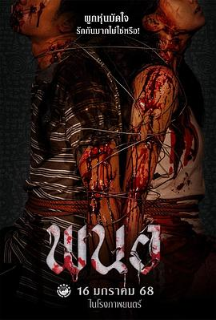

5.8
黑煞女
Panor
2025
泰国
评分 5.8
导演:
普蒂蓬·塞西甲（Puttipong Saisrikaew）
演员:
丘普朗·阿瑞昆 / 杰克林·坤万齐提柴 / 查莉塔·苏安珊 / 兰达娜瓦迪·望同 / 纳塔瓦·萨那萨瓦帕萨特 / 比吉卡·吉塔弗塔
类型:
剧情,恐怖,惊悚
剧情简介
偏远村庄里，婴儿潘娜出生的那天，黑魔法仪式在月色中悄然完成。村人扫视她的哭声，低语她的诞生是祸根。岁月流转，潘娜成了被孤立的少女：同学背后一指莲开、街角老人投来匆匆一瞥。任何与她接近的人，仿佛都被无形的厄运追逐。当潘娜走进课堂，她提醒自己用镇定掩饰颤抖；当她返家，窗外梧桐树影在风中摇晃，像是另一只注视她的眼。直到村里一连串怪异事件发生：牲畜在夜里呜咽、诡异符咒被刮刻墙壁、月光下的树林回响旧祷语。潘娜不再仅仅是受害者，她开始质问：这个标记、这个仪式、这血红的痕迹，究竟为了谁？随着故事推进，她发现所谓诅咒不过是权力的威仪、恐惧的延续：村里那些看似冷漠的长者、叩拜的教徒、旁观者，都在守护一个秘密。镜头捕捉她赤足跑过泥泞、指尖贴着斑驳的墙壁、双眸映出暗红的儀式现场。终于，潘娜决定反击——不是为了复仇，而为了解脱。她用破碎的镜子、腐蚀的符号、掉落的蜡烛，构建一场属于她的清算。导演将泰式阴森与心理恐惧融合：黎明前最深的黑影、香炉冒起的白烟、儿童在屋檐下倒影成双。影片在两个多小时里，不只是展示恐惧，而是抽出恐惧背后的结构：当一个孩子被贴上“祸害”标签，她所取代的，是整个社会的悬崖与裂缝。